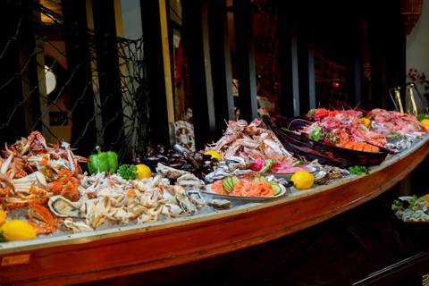

Twist (в нашем отеле)
Основной ресторан отеля. Каждую субботу 18:00–21:00 буфет Fisherman's BBQ — вариант прощального ужина 31.10 (и 24.10).
👍 Что заказать: в буфете: лангуст, гигантские речные креветки на гриле, голубой краб на пару, устрицы, гриль из говядины и свинины, сашими, домашнее мороженое Mövenpick. Вне буфета хвалят зелёное карри и том ям с морепродуктами
👶 С малышом: ребёнок до 6 лет на буфете бесплатно; есть детский уголок
💰 Цены: буфет: взрослый 1490 бат, 7–12 лет 745, до 6 лет бесплатно; напитки отдельно
⚠ Нюансы: мест мало — бронировать заранее через ресепшен; на завтраках бывает очередь